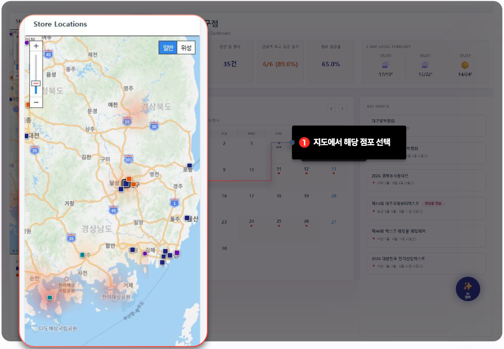
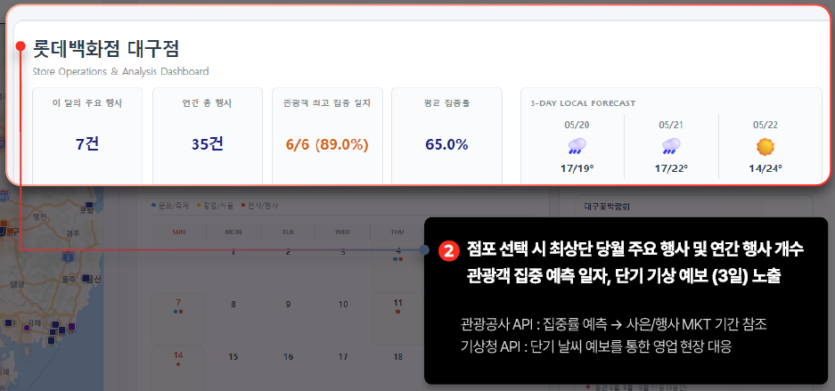
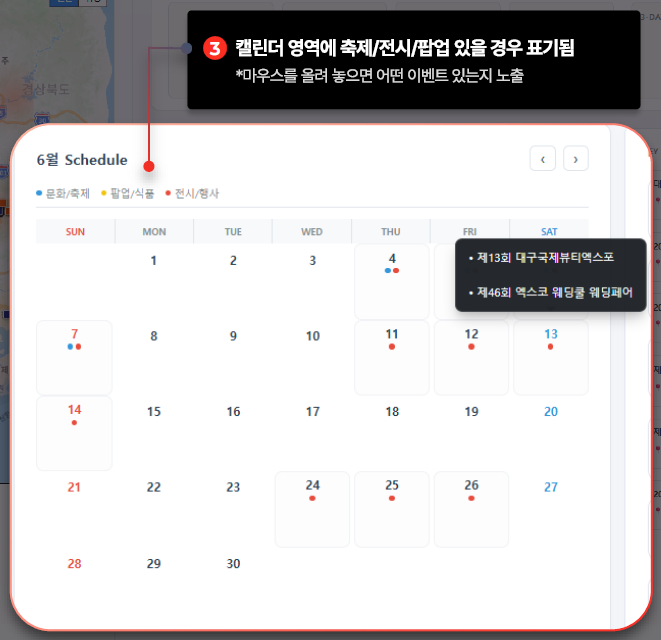
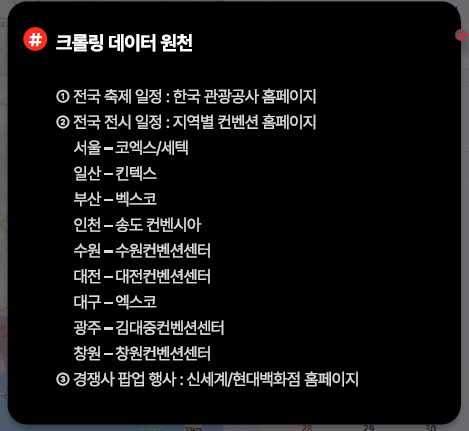
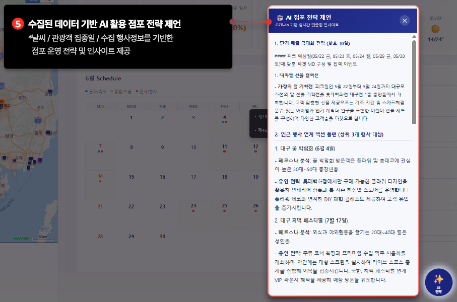

본 설문조사는 점포 인근 축제/전시/행사 정보를 제공하는 'Store AI' 서비스의 실효성 검증과 기능 보완을 위한 조사입니다. 현업의 소중한 피드백은 서비스 고도화에 적극 반영될 예정이오니 성실한 답변 부탁드립니다.
※ 하단 이미지 클릭 시 확대

※데이터 소스 : 기상청, 관광공사, 경쟁사 홈페이지

점포 인근 축제/전시/팝업 정보를 월별 캘린더를 통해 확인 할 수 있는 기능입니다. ※ 이미지 클릭시 확대

※ 이미지 클릭 시 확대

ex)지역 축제 연계 프로모션, 경쟁사 팝업 행사 대응, 컨벤션 전시행사 대응(베이비페어&뷰티페어 등) ※ 이미지 클릭 시 확대

설문에 소중한 피드백을 제공해 주셔서 대단히 감사합니다. 보내주신 의견을 면밀히 분석하여, 더욱 강력하고 실무에 유용한 Store AI 서비스를 만들도록 하겠습니다.